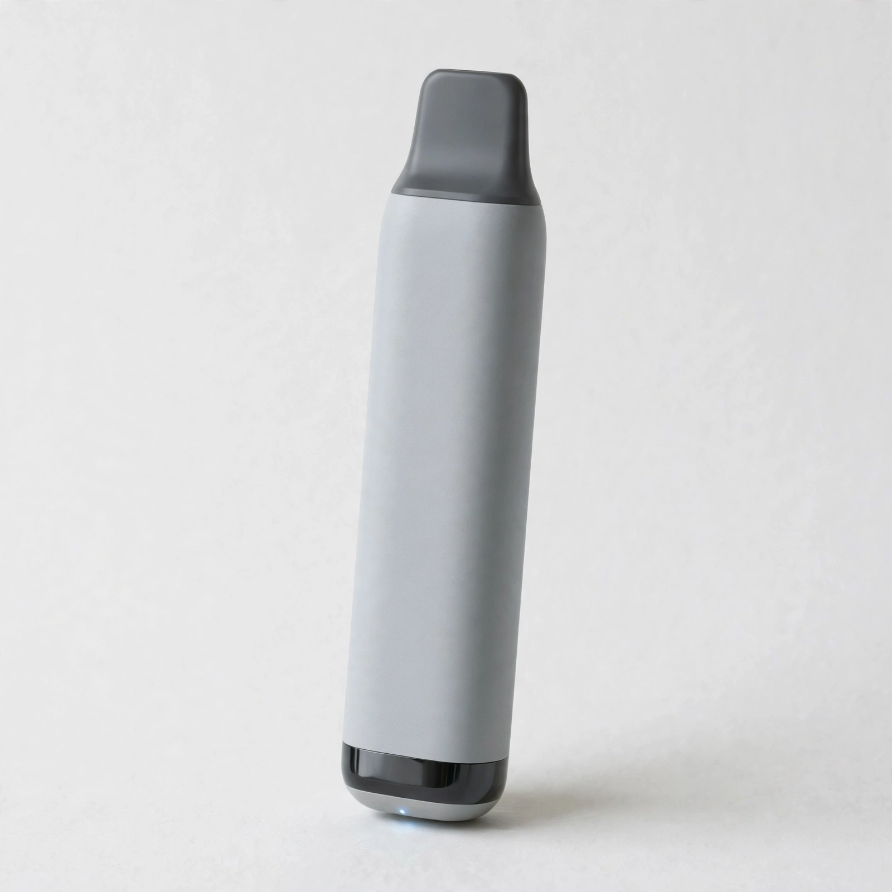

If you are exploring vaping products for the first time, choosing between different devices and compatible pods can feel confusing. Before making a decision, learn about product compatibility, running costs, nicotine content, and safety. This simple guide explains the key differences and helps you make an informed choice. Explore product information at vapsshop.ae and check the details before buying.
The Nerd Crystal 5500 Puffs is a disposable-style vaping product marketed around convenience and a stated puff capacity. However, actual puff counts vary with puff length, frequency, and device conditions. Its advertised capacity should not be treated as a guarantee of how long it will last.
Before purchasing, check the manufacturer's specifications, nicotine strength, battery details, and available flavor information. Also, confirm the product's authenticity and whether its labeling meets the applicable UAE requirements.
The term Myle V4 Compatible describes products claimed to work with a particular Myle device or pod system. Compatibility matters because products that look similar may have different connections, dimensions, or electrical requirements.
Always confirm the exact device model and compatibility information with the manufacturer. Do not assume that every pod or replacement component will fit. Using an incompatible component may cause leakage, poor performance, or device damage.
A low purchase price does not always mean better value. Disposable products may require replacement when their battery or liquid runs out. Compatible pod systems may involve recurring costs for replacement pods and other approved components.
First-time buyers should compare the full cost over time instead of focusing only on the price tag. Product availability, replacement requirements, and manufacturer support also matter when evaluating long-term expenses.
At available, reliable, and authentic stores, review the available product information carefully. Look for clear specifications, accurate descriptions, and details about returns or customer support. These checks can help you avoid misleading claims and unexpected costs.
Flavor descriptions can help explain a product's intended taste, but personal preferences differ. More importantly, flavor and puff capacity do not indicate that a product is safe. Nicotine is addictive, and vaping can expose people to harmful substances.
Adults who already use nicotine should check the stated nicotine concentration and follow the manufacturer's instructions. People who do not smoke or use nicotine should not start vaping. Non-smokers, young people, and pregnant individuals should avoid these products.
Choose products with clear labeling, identifiable manufacturers, and appropriate regulatory information. Avoid damaged packaging, unclear ingredients, suspiciously low prices, or products with unverifiable claims. Follow local UAE rules on purchasing, possession, and use.
Your decision should depend on verified specifications rather than marketing claims. The Nerd Crystal 5500 Puffs may appeal to adults seeking a disposable format, while Myle V4 Compatible products require careful checks to ensure they match the intended device.
Neither option is automatically better. Compare product authenticity, compatibility, nicotine information, total cost, and applicable regulations before making a decision.
Choosing between the Nerd Crystal 5500 Puffs and Myle V4 Compatible products requires more than comparing names or advertised features. Check the specifications, verify compatibility, and review the full cost before purchasing. Visit authentic retailers for available product information, and prioritize authentic products, clear labeling, and compliance with UAE regulations.